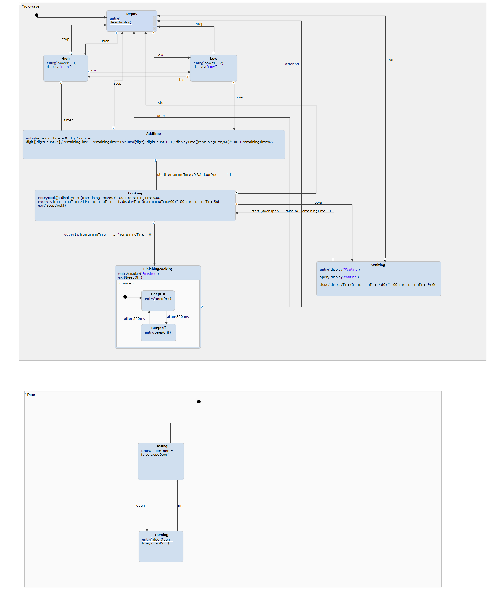
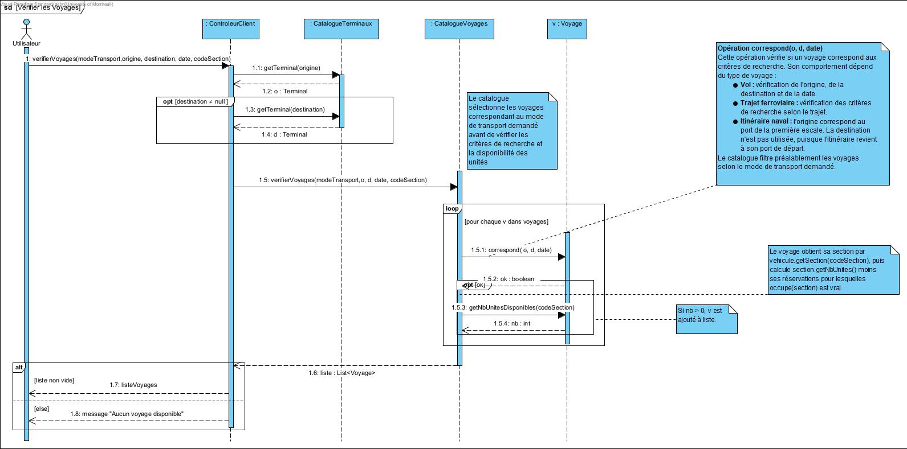

Rapport
IFT 3911 – Devoir 2 – Modélisation et analyse
| Nom | Matricule (4 derniers chiffres) | Courriel | Temps consacré au devoir |
|---|---|---|---|
| Toky Erick Rabenantoandro | 6409 | toky.erick.rabenantoandro@umontreal.ca | [À COMPLÉTER] h |
| Gabriel Barroso Magno Viana | 3304 | gabriel.barroso.magno.viana@umontreal.ca | 20 h |
| Jad Idrissi | 8693 | jad.idrissi@umontreal.ca | [À COMPLÉTER] h |
Dépôt GitHub : [URL DU RÉPERTOIRE GITHUB DU DM2]
Fichiers remis
Le fichier rapport.html se trouve à la racine
de l'archive ZIP. Le dépôt est organisé comme suit :
rapport.htm
Design/
projet.vpp
diagrammes/
Réseau de Petri/
reseau-tunnel.xml
reseau-tunnel.png
graphe-couverture.png
Statechart/
Microwave/
model/
microwave.sct
java.sgen
image.sgen
src/
images/
microwave_complet.png
microwave.png
porte.png
Hypothèses générales
Hypothèses concernant le réseau de Pétri
- Le flux est continu : une voiture attend en tout temps à chaque entrée du tunnel.
- Une voiture quitte le système dès qu'elle sort du tunnel ; aucune place ne représente les voitures arrivées.
- Un feu est vert lorsque sa place contient un jeton, et rouge sinon. Pendant une traversée, les deux feux sont rouges.
- Au départ, le tunnel est vide et le feu côté Montréal est vert. Ce choix est arbitraire : l'autre choix produit le même cycle.
Hypothèses concernant le micro-ondes
- Le four démarre au repos, avec la porte fermée.
-
La puissance doit être sélectionnée avant
la saisie du temps.
La puissance forte correspond à
power = 1, tandis que la puissance faible correspond àpower = 2. - Le temps saisi comporte au maximum quatre chiffres et représente une durée en secondes.
- Une durée nulle ne permet pas de démarrer la cuisson.
- L'ouverture et la fermeture de la porte ne déclenchent jamais automatiquement la cuisson.
-
L'événement
stopinterrompt le processus sans modifier physiquement l'état de la porte.
1. Réseau de Pétri – Tunnel
Responsable : Toky Erick Rabenantoandro
1.1 Hypothèses et modélisation
Le réseau a été construit en trois incréments, dans l'ordre des consignes. Chaque place représente une condition et chaque transition un événement.
- Voiture en attente MTL et Voiture en attente RS : une voiture attend à l'entrée du tunnel (1 jeton chacune au départ).
- Tunnel Libre : aucune voiture n'est dans le tunnel (1 jeton au départ).
- Dans tunnel vers RS et Dans tunnel vers MTL : une voiture traverse le tunnel dans ce sens (0 jeton au départ).
- Feu MTL et Feu RS : le feu de ce côté est vert (1 jeton pour Feu MTL, 0 pour Feu RS au départ).
| Transition | Consomme | Produit |
|---|---|---|
| Entrer depuis Montréal | Voiture en attente MTL, Tunnel Libre, Feu MTL | Voiture en attente MTL, Dans tunnel vers RS |
| Sortir vers Rive Sud | Dans tunnel vers RS | Tunnel Libre, Feu RS |
| Entrer depuis Rive Sud | Voiture en attente RS, Tunnel Libre, Feu RS | Voiture en attente RS, Dans tunnel vers MTL |
| Sortir vers Montréal | Dans tunnel vers MTL | Tunnel Libre, Feu MTL |
Tous les arcs ont un poids de 1. L'état est noté :
M = [ Voiture en attente MTL, Voiture en attente RS, Tunnel Libre, Dans tunnel vers RS, Dans tunnel vers MTL, Feu MTL, Feu RS ] M0 = [1, 1, 1, 0, 0, 1, 0]
Incrément 1 – Les deux voies et le flux continu
Chaque voie possède une place d'attente et une place représentant la voiture dans le tunnel. Chaque place d'attente est reliée à sa transition d'entrée par deux arcs : le jeton est consommé (la voiture part dans le tunnel), puis immédiatement restitué (la voiture suivante arrive).
Son marquage reste donc constant à 1, ce qui modélise le flux continu. Ce jeton reste indispensable : sans lui, l'entrée ne serait jamais franchissable. À ce stade, rien ne limite le nombre de voitures dans le tunnel : le réseau n'est pas borné.
Incrément 2 – Une seule voiture dans le tunnel
La place « Tunnel Libre » joue le rôle de capacité : les deux transitions d'entrée la consomment et les deux transitions de sortie la rendent. Une voiture n'entre donc que si le tunnel est vide.
Les deux entrées sont toutefois en conflit sur cette place : rien n'empêche une même voie de reprendre le tunnel indéfiniment. Le système n'est pas équitable.
Incrément 3 – Les feux
Une transition d'entrée consomme le feu vert de son côté, et la transition de sortie correspondante donne le vert au côté opposé.
Lorsqu'une voiture venue de Montréal sort, le feu côté Rive Sud passe au vert, et inversement. Les deux sens de circulation alternent donc.

1.2 Lois de conservation et sécurité
On considère le vecteur de pondération :
γ = [0, 0, 1, 1, 1, 0, 0] S(M) = M(Tunnel Libre) + M(Dans tunnel vers RS) + M(Dans tunnel vers MTL)
- « Entrer depuis Montréal » retire un jeton de Tunnel Libre et en ajoute un dans Dans tunnel vers RS : S ne change pas.
- « Sortir vers Rive Sud » retire un jeton de Dans tunnel vers RS et en ajoute un dans Tunnel Libre : S ne change pas.
- « Entrer depuis Rive Sud » et « Sortir vers Montréal » font de même avec Dans tunnel vers MTL : S ne change pas.
Au départ, S(M0) = 1 + 0 + 0 = 1. Comme tout marquage accessible s'obtient par une suite de franchissements depuis M0, on a S(M) = 1 pour tout marquage accessible : le réseau est conservateur pour γ, avec k = 1.
Puisqu'un nombre de jetons est toujours positif ou nul, M(Tunnel Libre) ≥ 0, et donc :
M(Dans tunnel vers RS) + M(Dans tunnel vers MTL) ≤ 1
Au plus une voiture se trouve dans le tunnel, quel que soit son sens.
Deux autres lois se vérifient de la même façon :
- M(Voiture en attente MTL) = 1 et M(Voiture en attente RS) = 1 : une voiture attend en tout temps à chaque entrée.
- M(Dans tunnel vers RS) + M(Dans tunnel vers MTL) + M(Feu MTL) + M(Feu RS) = 1 : au plus un feu est vert, et aucun ne l'est lorsque le tunnel est occupé.
Ces lois montrent que chaque place contient au plus un jeton : le réseau est borné et sécuritaire.
1.3 Graphe de couverture et absence de famine
Le graphe est construit avec l'algorithme de Karp-Miller, à partir de M0. Pour chaque nœud, on teste les quatre transitions ; une transition est franchissable lorsque chacune de ses places d'entrée contient au moins un jeton.
| Nœud | Marquage | Transition franchissable | Résultat |
|---|---|---|---|
| M0 | [1,1,1,0,0,1,0] | Entrer depuis Montréal | M1 |
| M1 | [1,1,0,1,0,0,0] | Sortir vers Rive Sud | M2 |
| M2 | [1,1,1,0,0,0,1] | Entrer depuis Rive Sud | M3 |
| M3 | [1,1,0,0,1,0,0] | Sortir vers Montréal | M0 |
À chaque étape, le marquage obtenu est comparé aux nœuds de son chemin depuis M0. Il contient toujours moins de jetons qu'eux dans au moins une place : aucun marquage ne domine un ancêtre, donc aucun ω n'est introduit.
Le marquage obtenu depuis M3 est égal à M0 : c'est un duplicata, et la construction s'arrête.

Propriétés lues sur le graphe
- Borné : aucun ω n'apparaît. Le graphe de couverture est donc identique au graphe d'accessibilité.
- Pas d'interblocage : aucun nœud n'est terminal.
- Vivant : les quatre transitions apparaissent dans le cycle et restent franchissables depuis tout marquage accessible ; elles sont L4-vivantes.
Équité
Chaque nœud a un seul arc sortant : la seule séquence possible est :
Entrer depuis Montréal → Sortir vers Rive Sud → Entrer depuis Rive Sud → Sortir vers Montréal → ...
Cette séquence est répétée indéfiniment. Aucun marquage ne rend les deux transitions d'entrée franchissables en même temps. Les entrées des deux sens alternent strictement, et une même voie ne peut jamais entrer deux fois de suite.
Absence de famine
Il y a famine lorsqu'un processus se voit refuser indéfiniment une ressource dont il a besoin. Ici, les processus sont les deux voies et la ressource est le tunnel.
Puisque le système est équitable, chaque voie obtient le tunnel en au plus trois franchissements depuis n'importe quel état, c'est-à-dire après le passage d'une seule voiture de l'autre côté.
Comme il n'y a pas d'interblocage, aucune voie n'attend indéfiniment : il n'y a pas de famine dans le réseau.
Fichier source : Réseau de Petri/reseau-tunnel.xml
2. Statechart – Four à micro-ondes
Responsable : Gabriel Barroso Magno Viana
2.1 Présentation générale du modèle
Le comportement du four à micro-ondes est modélisé à l'aide d'un Statechart réalisé dans itemis CREATE, à partir du modèle initial fourni dans l'énoncé.
Le modèle est organisé en deux régions orthogonales :
Microwave et Porte.
La première région est responsable du fonctionnement du micro-ondes, notamment la sélection de puissance, la saisie du temps, la cuisson et sa finalisation. La seconde région contrôle l'ouverture et la fermeture de la porte.
L'utilisation de régions orthogonales permet de représenter simultanément deux aspects indépendants du système.
Ainsi, le micro-ondes peut se trouver
dans un état de fonctionnement,
comme Addtime ou Waiting,
tout en ayant la porte ouverte ou fermée.
Cette approche évite de multiplier les états pour représenter toutes les combinaisons possibles entre le fonctionnement du micro-ondes et la position de la porte.

2.2 Région Microwave

2.2.1 Sélection de la puissance
Le système commence dans l'état Repos.
Dans cet état, l'afficheur est initialisé
par l'opération clearDisplay().
Les événements high et low
permettent de sélectionner respectivement
une puissance forte ou faible.
Le système peut également passer d'une puissance à l'autre avant la configuration du temps de cuisson.
Lors de l'entrée dans l'état High,
la variable power reçoit la valeur 1
et le message « High » est affiché.
Dans l'état Low,
la variable reçoit la valeur 2
et le message « Low » est affiché.
2.2.2 Saisie du temps
L'événement timer permet de passer
de l'état de sélection de puissance
à l'état Addtime.
Cet état permet de saisir une durée
de quatre chiffres au maximum.
Deux variables internes sont utilisées :
remainingTime,
qui contient la durée saisie en secondes,
et digitCount,
qui représente le nombre de chiffres introduits.
Une réaction locale associée à l'événement
digit permet de mettre à jour
le temps sans quitter l'état Addtime.
La garde digitCount < 4
empêche l'introduction de chiffres supplémentaires
après les quatre premiers.
digit [digitCount < 4] /
remainingTime = remainingTime * 10 + valueof(digit);
digitCount += 1;
displayTime((remainingTime / 60) * 100 + remainingTime % 60)
La conversion utilisée pour
displayTime()
permet de représenter le temps
sous la forme minutes:secondes,
tout en conservant la durée réelle
en secondes dans remainingTime.
2.2.3 Cuisson et compte à rebours
La transition vers l'état Cooking
nécessite l'événement start
et le respect de deux conditions :
la durée doit être positive
et la porte doit être fermée.
start [remainingTime > 0 && doorOpen == false]
À l'entrée dans Cooking,
l'opération cook() démarre la cuisson
et le temps restant est affiché.
Le compte à rebours est modélisé
par une réaction temporelle
every 1 s.
Elle diminue la variable
remainingTime
d'une unité toutes les secondes,
tant que sa valeur est supérieure à 1.
every 1 s [remainingTime > 1] /
remainingTime -= 1;
displayTime((remainingTime / 60) * 100 + remainingTime % 60)
Lorsque le temps restant est égal à une seconde,
une transition temporelle vers
Finishingcooking
permet de terminer le processus.
every 1 s [remainingTime == 1] /
remainingTime = 0
L'action de sortie stopCook()
assure l'interruption de la cuisson
lorsque l'état Cooking est quitté.
2.3 Région Porte

La région Porte
comporte deux états :
Closing et Opening.
L'état initial est Closing,
qui représente une porte fermée.
Les événements open et
close permettent de passer
d'un état à l'autre.
La variable interne booléenne
doorOpen
mémorise la position de la porte.
Lors de l'entrée dans Opening,
cette variable devient true
et l'opération openDoor()
est exécutée.
À l'inverse, l'entrée dans
Closing
met doorOpen à
false
et exécute closeDoor().
Cette variable est consultée dans les gardes de la région principale afin d'empêcher la cuisson lorsque la porte est ouverte.
2.4 Interruption et reprise de la cuisson
Lorsqu'un événement open
survient pendant la cuisson,
le système passe de Cooking
à Waiting.
La sortie de l'état Cooking
provoque l'exécution de stopCook(),
interrompant immédiatement le processus de cuisson.
Le temps restant est conservé
dans la variable remainingTime.
Il n'est donc pas nécessaire
de recommencer la configuration du temporisateur.
À l'entrée dans Waiting,
le message « Waiting » est affiché.
Si la porte est refermée,
une réaction locale associée à close
permet de restaurer le temps restant
sur l'afficheur.
Une nouvelle ouverture de la porte dans cet état affiche à nouveau le message « Waiting ».
La fermeture de la porte
ne déclenche pas automatiquement la reprise.
L'utilisateur doit appuyer
à nouveau sur start.
La transition vers Cooking
est alors autorisée uniquement
si la porte est fermée
et si le temps restant est positif.
start [doorOpen == false && remainingTime > 0]
Cette solution permet d'assurer la sécurité du système et la conservation des informations nécessaires à la reprise de la cuisson.
2.5 Fin de la cuisson
Lorsque le compte à rebours arrive à son terme,
le système entre dans l'état composite
Finishingcooking.
L'entrée dans cet état affiche le message « Finished ».
Deux sous-états,
BeepOn et BeepOff,
assurent la signalisation sonore
et le clignotement de l'afficheur.
Les deux états alternent
à intervalles de 500 millisecondes,
grâce à des transitions temporelles
after 500 ms.
Une transition after 5 s,
définie au niveau de l'état composite,
met fin à cette signalisation
et ramène le micro-ondes
à l'état Repos.
L'action de sortie beepOff()
permet d'interrompre la signalisation
au moment de quitter Finishingcooking.
2.6 Arrêt du système
L'événement stop
permet d'interrompre le fonctionnement
du micro-ondes et de revenir
à l'état Repos.
Cette possibilité est prévue depuis les différents états du processus, notamment la sélection de puissance, la saisie du temps, la cuisson, l'attente et la signalisation de fin.
Lors de l'arrêt, les actions de sortie des états concernés garantissent l'interruption de la cuisson ou de la signalisation.
La région de la porte reste indépendante :
l'utilisation de stop
ne provoque pas automatiquement
la fermeture de la porte.
2.7 Fichiers du projet
Fichier source principal : Statechart/Microwave/model/microwave.sct
Le dossier Statechart/Microwave/
contient les fichiers du projet itemis CREATE
utilisé pour la modélisation du système.
2.8 Génération du code et vérification
3. Design logiciel – Révision du devoir 1
Le système de réservation de voyages développé dans le devoir maison 1 est révisé afin d'améliorer sa modularité, sa réutilisabilité et la répartition des responsabilités.
3.1 Révision du diagramme de classes logiciel
Insérer le diagramme de classes révisé. Présenter les modifications apportées par rapport au DM1.
Expliquer les responsabilités des nouvelles classes et les changements dans les associations.

3.2 Révision des diagrammes de séquence
Responsable : Gabriel Barroso Magno Viana
Lors de la correction du devoir maison 1, les diagrammes de séquence ont obtenu une note de 14/15. Les scénarios « Réserver une unité » et « Payer une réservation » ont été jugés corrects. Les modifications ont donc principalement porté sur le diagramme « Vérifier les voyages », afin de répondre aux commentaires du correcteur.
3.2.1 Vérifier les voyages disponibles
Les modifications suivantes ont été apportées :
-
Ajout du mode de transport :
le paramètre
modeTransporta été ajouté à l'opérationverifierVoyages(), permettant à l'utilisateur de préciser le mode de transport recherché. Ce paramètre est également transmis auCatalogueVoyages. -
Clarification de l'acteur :
l'acteur
Clienta été renomméUtilisateur, afin de préciser qu'il représente un acteur externe et non une classe du système. - Filtrage des voyages : une note a été ajoutée pour préciser que le catalogue sélectionne les voyages selon le mode de transport demandé avant de vérifier les critères de recherche et la disponibilité des unités.
- Clarification de l'opération correspond() : son fonctionnement polymorphe a été précisé afin de distinguer les critères de recherche propres aux différents modes de transport.

3.2.2 Réserver une unité et Payer une réservation
Les diagrammes de séquence « Réserver une unité » et « Payer une réservation » ont été jugés corrects lors de l'évaluation du DM1. Leur structure a donc été conservée, sous réserve de vérifier leur cohérence avec le diagramme de classes logiciel révisé pour le DM2.
3.3 Révision du diagramme de paquets
Insérer le diagramme de paquets révisé.
- Présenter les nouveaux regroupements de classes.
- Expliquer les dépendances entre les paquets.
- Préciser la direction des dépendances.
- Identifier les interfaces utilisées.
- Justifier les améliorations du design.

3.4 Révision des contraintes OCL
Responsable : Toky Erick Rabenantoandro
Les contraintes utilisent les classes
et associations du diagramme du DM1.
Sans nom de rôle,
on utilise le nom de la classe en minuscule.
On suppose que Date
offre plusJours(n : Integer) : Date.
Corrections par rapport au DM1
- C2 : retirée (hors énoncé).
- C4 : contrat déplacé sur
Reservation::confirmer. - C5 et C6 : chaque caractère du code est une lettre.
- C7 : navigation par
self.vehicule.compagnie. - C8 : retirée (doublon de
sansChevauchement). - C9 : conditions reliées par
and. - C11 : remplacée par
Voyage::reserver. - C12 : préconditions sur le passager, l'état et l'unité.
getDebut()etgetFin()remplacées parfinitAvant.- Ajout d'invariants de mode pour les transports.
Contraintes communes
Un voyage finit avant un autre s'il arrive au plus tard à son départ.
context Voyage def: finitAvant(v : Voyage) : Boolean = self.dateArrivee < v.dateDepart or (self.dateArrivee = v.dateDepart and self.heureArrivee <= v.heureDepart)
Les voyages d'un même véhicule ne se chevauchent pas.
context Vehicule
inv sansChevauchement:
self.voyages->forAll(v1, v2 |
v1 <> v2 implies
v1.finitAvant(v2) or v2.finitAvant(v1))
Le véhicule d'un voyage appartient à la compagnie qui l'exploite.
context Voyage inv vehiculeDeLaCompagnie: self.vehicule.compagnie = self.compagnie
Réserver une unité
Une réservation en attente est créée lorsqu'une unité est disponible.
context Voyage::reserver(
codeSection : String,
priorite : Priorite
) : String
pre:
self.getNbUnitesDisponibles(codeSection) > 0
post:
self.reservations->size() =
self.reservations@pre->size() + 1
post:
self.reservations->exists(r |
r.numero = result and
r.etat = EtatReservation::EnAttente and
r.passager->isEmpty())
Confirmer une réservation
La réservation doit être en attente, sans passager ni paiement, et son unité doit être libre. Le montant doit être positif.
context Reservation::confirmer(
nom : String,
courriel : String,
numeroPasseport : String,
carte : CarteCredit,
montant : Real
) : String
pre:
self.etat = EtatReservation::EnAttente
pre:
self.passager->isEmpty() and
self.paiement->isEmpty()
pre:
self.voyage.reservations->forAll(r |
(r <> self and
r.etat = EtatReservation::Confirmee)
implies
r.uniteReservable <> self.uniteReservable)
pre:
montant > 0
post:
self.etat = EtatReservation::Confirmee
post:
self.passager.nom = nom and
self.passager.courriel = courriel and
self.passager.numeroPasseport = numeroPasseport
post:
self.paiement.montant = montant and
self.paiement.numeroConfirmation = result
Voyage aérien
Un aéroport est identifié par un code de trois lettres unique.
context Aeroport
inv codeTroisLettres:
self.code.size() = 3 and
Sequence{1..3}->forAll(i |
let c : String =
self.code.substring(i, i)
in
c.toUpperCase() <> c.toLowerCase())
inv codeUnique:
Aeroport.allInstances()->isUnique(code)
Une compagnie aérienne est identifiée par un code de deux lettres unique.
context CompagnieAerienne
inv codeDeuxLettres:
self.code.size() = 2 and
Sequence{1..2}->forAll(i |
let c : String =
self.code.substring(i, i)
in
c.toUpperCase() <> c.toLowerCase())
inv codeUnique:
CompagnieAerienne.allInstances()->isUnique(code)
Un vol utilise une compagnie aérienne et un avion. Son numéro, unique, est le code de la compagnie suivi de quatre chiffres.
context Vol
inv modeAerien:
self.compagnie.oclIsKindOf(CompagnieAerienne) and
self.vehicule.oclIsKindOf(Avion)
inv formatNumero:
self.numero.size() = 6 and
self.numero.substring(1, 2) =
self.compagnie.code and
Sequence{3..6}->forAll(i |
Set{'0','1','2','3','4','5','6','7','8','9'}
->includes(self.numero.substring(i, i)))
inv numeroUnique:
Vol.allInstances()->isUnique(numero)
inv aeroportsDistincts:
self.origine <> self.destination
Un avion appartient à une compagnie aérienne et ne possède que des sections d'avion.
context Avion
inv modeAerien:
self.compagnie.oclIsKindOf(CompagnieAerienne) and
self.section->forAll(s |
s.oclIsKindOf(SectionAvion))
Les sections d'avion peuvent présenter quatre dispositions : S, C, M et L.
context SectionAvion
inv dispositionValide:
Set{'S', 'C', 'M', 'L'}
->includes(self.dispositionSiege)
def: nbColonnes : Integer =
if self.dispositionSiege = 'S' then 3
else if self.dispositionSiege = 'C' then 4
else if self.dispositionSiege = 'M' then 6
else 10 endif endif endif
inv ailes:
(self.dispositionSiege = 'S'
implies self.aile = Set{1}) and
(self.dispositionSiege = 'C'
implies self.aile = Set{2}) and
(self.dispositionSiege = 'M'
implies self.aile = Set{3}) and
(self.dispositionSiege = 'L'
implies self.aile = Set{3, 7})
inv sieges:
self.uniteReservable->forAll(u |
u.oclIsKindOf(Siege) and
u.oclAsType(Siege).rangee >= 1 and
u.oclAsType(Siege).rangee <= 100 and
Sequence{'A','B','C','D','E','F','G','H','I','J'}
->subSequence(1, self.nbColonnes)
->includes(u.oclAsType(Siege).colonne))
Voyage naval
Un itinéraire utilise une compagnie de croisière et un paquebot. Il dure au plus 14 jours, visite au moins trois ports et revient à son port de départ.
context Itineraire
inv modeNaval:
self.compagnie.oclIsKindOf(CompagnieDeCroisère) and
self.vehicule.oclIsKindOf(Paquebot)
inv dureeMax14Jours:
self.dateArrivee <=
self.dateDepart.plusJours(14)
inv auMoinsTroisPortsDistincts:
self.escales.port->asSet()->size() >= 3
inv boucle:
self.escales->sortedBy(numero)->first().port =
self.escales->sortedBy(numero)->last().port
Voyage ferroviaire
Un trajet utilise une ligne de train et un train. Une gare n'y apparaît qu'une seule fois.
context Trajet inv modeFerroviaire: self.compagnie.oclIsKindOf(LigneTrain) and self.vehicule.oclIsKindOf(Train) inv garesUniques: self.arrets->isUnique(a | a.gare.code)
-
Adapter
CarteCreditsi cette classe a été retirée. - Adapter les dispositions de sièges si des énumérations ont été introduites.
- Vérifier les noms de rôles et les associations.
- Ajouter les contraintes des nouvelles classes.
3.5 Modules réutilisables
Identifier les modules à usage général et présenter les classes ou paquets qui peuvent être réutilisés dans d'autres applications.
Expliquer les décisions de conception favorisant la réutilisabilité.
Projet Visual Paradigm : Design/projet.vpp
4. Qualité du design
4.1 Couplage et cohésion
Analyser les types et niveaux de couplage entre les classes et les paquets.
Évaluer la cohésion des classes et identifier les améliorations apportées au design.
4.2 Fardeau et domaine des classes
Analyser la relation entre le fardeau et le domaine des classes.
Identifier les classes ayant trop de responsabilités et justifier les modifications apportées.
4.3 Graphe Instabilité–Abstraction (IA)
Calculer les mesures d'instabilité et d'abstraction des paquets.
Présenter le graphe IA, interpréter les résultats et justifier la structure obtenue.

4.4 Principes de conception
Responsable : Jad Idrissi
Principes de conception de classes
-
SRP.
Une responsabilité par classe :
ControleurClientcoordonne,CatalogueVoyagesrecherche,Reservationgère son état, etIServicePaiementisole le paiement. -
OCP.
Compagnie,Vehicule,Voyage,SectionetTerminalsont abstraites. Un nouveau mode peut être ajouté par sous-classes. -
LSP.
Vol,TrajetetItineraireredéfinissentcorrespond()avec la même signature et le même contrat. -
ISP.
IServicePaiementn'offre queautoriser(), l'opération utilisée par le système. -
DIP.
Le contrôleur dépend de
IServicePaiement, et les catalogues dépendent des abstractionsVoyageetTerminal. -
CRP.
Le prix est obtenu par délégation
à
Compagnie, et non par héritage. -
Loi de Demeter.
Le contrôleur appelle
voyage.reserver()etreservation.confirmer()sans parcourir les objets internes.
Principes GRASP
-
Contrôleur.
ControleurClientreçoit les opérations système et délègue au domaine. -
Expert.
Voyagecalcule ses unités disponibles, tandis queCompagniecalcule le prix. -
Créateur.
Voyagecrée ses réservations.Reservationcrée le passager et le paiement. -
Fabrication pure.
CatalogueVoyagesetCatalogueTerminauxprennent en charge les recherches. -
Polymorphisme.
correspond()est redéfinie par type de voyage. -
Variations protégées.
IServicePaiementprotège le système d'un changement de fournisseur de paiement. - Faible couplage. Le contrôleur communique avec les catalogues, les interfaces et les objets responsables des opérations.
Principes de conception de paquets
- ADP. Les dépendances sont orientées de la présentation vers le domaine et ne doivent pas former de cycles.
- SDP. Le domaine est conçu comme la partie la plus stable du système.
- SAP. Les paquets stables contiennent davantage d'abstractions, tandis que les paquets concrets peuvent être plus instables.
Distribution des tâches
La répartition ci-dessous reprend les responsabilités annoncées par l'équipe. Pour chaque tâche, le pourcentage de contribution indique le membre responsable et le poids indique la part du barème initial.
| Tâche | Poids | Membre 1 Toky |
Membre 2 Gabriel |
Membre 3 Jad |
|---|---|---|---|---|
| Réseau de Pétri : modélisation | 15 % | 100 % | 0 % | 0 % |
| Réseau de Pétri : analyse | 10 % | 100 % | 0 % | 0 % |
| Statechart du micro-ondes | 25 % | 0 % | 100 % | 0 % |
| Génération du code et vérification | 5 %* | 0 % | 100 %* | 0 % |
| Révision du diagramme de classes logiciel | 5 % | 0 % | 0 % | 100 % |
| Révision des diagrammes de séquence | 5 % | 0 % | 100 % | 0 % |
| Révision du diagramme de paquets | 5 % | 0 % | 0 % | 100 % |
| Révision des contraintes OCL | 5 % | 100 % | 0 % | 0 % |
| Identification des modules réutilisables | 5 % | 0 % | 0 % | 100 % |
| Analyse du couplage et de la cohésion | 5 % | 0 % | 0 % | 100 % |
| Analyse du fardeau des classes | 5 % | 0 % | 0 % | 100 % |
| Graphe IA et justification | 5 % | 0 % | 0 % | 100 % |
| Justification des principes de conception | 5 % | 0 % | 0 % | 100 % |
| Total selon les tâches détaillées | 100 % | 30 % | 35 % | 35 % |
L'équipe a indiqué les totaux suivants : Toky 35 %, Gabriel 35 % et Jad 30 %.
Cependant, les tâches détaillées totalisent respectivement 30 %, 35 % et 35 %.
Il faut confirmer la responsabilité de la justification des principes de conception (5 %) ou ajuster la répartition des tâches avant la remise.
* L'enseignant a annoncé que seule la modélisation Statechart serait évaluée pour le micro-ondes, la version compatible avec le code Java fourni n'étant plus disponible. Le poids de 5 % est conservé ici comme référence au barème initial.
Membre 1 – Toky
Responsable du réseau de Pétri du tunnel : modélisation et analyse, marquage initial, lois de conservation, graphe de couverture, étude de l'équité et de l'absence de famine.
Responsable également de la révision des contraintes OCL et de la rédaction de leurs justifications.
Membre 2 – Gabriel
Responsable de la modélisation du Statechart du four à micro-ondes.
Conception de la sélection de puissance, de la configuration du temps, du compte à rebours, de la gestion de la porte à l'aide de régions orthogonales, de l'interruption et de la reprise de la cuisson, ainsi que de la signalisation de fin.
Préparation des fichiers et des images du diagramme pour le rapport.
Responsable de la révision des diagrammes de séquence du DM1.
Dans le scénario « Vérifier les voyages »,
ajout du paramètre modeTransport,
clarification de l'acteur externe
Utilisateur
et amélioration de l'explication
de l'opération polymorphe
correspond().
Les deux autres scénarios doivent rester cohérents avec le diagramme de classes logiciel révisé avant la remise finale.
Concernant la génération du code Java, les consignes ont été modifiées par l'enseignant : l'évaluation porte uniquement sur le Statechart.
Membre 3 – Jad
Responsable de la révision des diagrammes de classes et de paquets, de l'identification des modules réutilisables, de l'analyse du couplage et de la cohésion, et de l'analyse du fardeau des classes.
Responsable également du graphe Instabilité–Abstraction (IA) et de sa justification, ainsi que de la justification des principes de conception, selon la répartition fournie par l'équipe.
La répartition totale doit être confirmée avec les autres membres avant la remise finale.